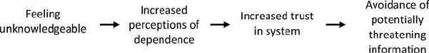
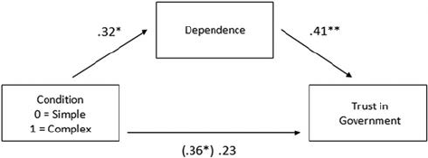
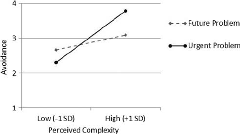
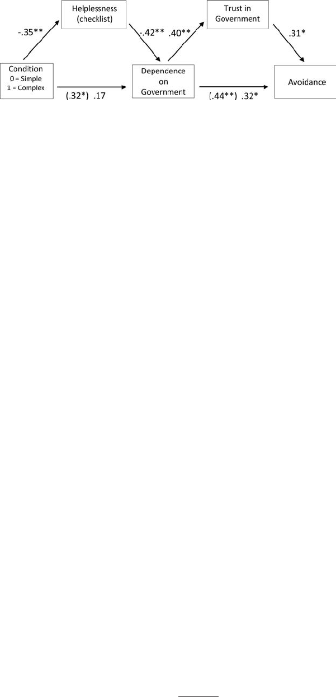
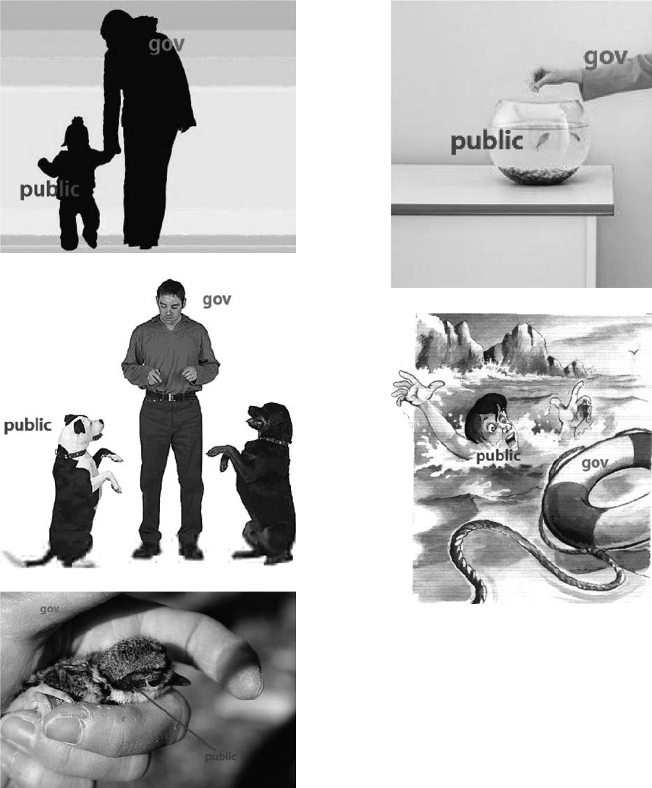

On the Perpetuation of Ignorance: System Dependence, System
Justification, and the Motivated Avoidance of Sociopolitical Information
Steven Shepherd
University of Waterloo
Aaron C. Kay
Duke University
How do people cope when they feel uninformed or unable to understand important social issues, such as
the environment, energy concerns, or the economy? Do they seek out information, or do they simply
ignore the threatening issue at hand? One would intuitively expect that a lack of knowledge would
motivate an increased, unbiased search for information, thereby facilitating participation and engagement
in these issues—especially when they are consequential, pressing, and self-relevant. However, there
appears to be a discrepancy between the importance/self-relevance of social issues and people’s
willingness to engage with and learn about them. Leveraging the literature on system justification theory
(Jost & Banaji, 1994), the authors hypothesized that, rather than motivating an increased search for
information, a lack of knowledge about a specific sociopolitical issue will (a) foster feelings of
dependence on the government, which will (b) increase system justification and government trust, which
will (c) increase desires to avoid learning about the relevant issue when information is negative or when
information valence is unknown. In other words, the authors suggest that ignorance—as a function of the
system justifying tendencies it may activate—may, ironically, breed more ignorance. In the contexts of
energy, environmental, and economic issues, the authors present 5 studies that (a) provide evidence for
this specific psychological chain (i.e., ignorance about an issue 3 dependence 3 government trust 3
avoidance of information about that issue); (b) shed light on the role of threat and motivation in driving
the second and third links in this chain; and (c) illustrate the unfortunate consequences of this process for
individual action in those contexts that may need it most.
Keywords: system justification, dependence, government, motivated audience, economy
No you will not teach or show that propagandist Al Gore video to my
child, blaming our nation – the greatest nation ever to exist on this
planet – for global warming. (Frosty E. Hardison, outraged parent;
cited in Harden, 1997, para. 4)
In the 2006 documentary An Inconvenient Truth, Al Gore uses
an especially dramatic method for conveying to his audience the
potential effects of rising carbon dioxide levels on global temper-
ature. Positioned beside a slide with the atmosphere’s forecasted
carbon dioxide (CO
2
) levels plotted along the vertical axis of a
graph, Gore places himself on an automated lift that takes him
nearly to the ceiling of the lecture hall. He does this so that he can
illustrate just how sharp and unprecedented of a rise in CO
2
levels
are predicted a mere 50 years into the future.
Al Gore’s reason for using these theatrics is no doubt to hammer
home the magnitude of the problem humankind faces, with the
hope that forcing people to recognize the complexity of the prob-
lem will motivate them to take action—an idea that, on the surface,
makes intuitive sense. The more powerfully one conveys the
severity of a given problem, the logic goes, the more motivated
people should be to address this problem. Recent research on
processes of system justification, however, suggests this may not
be the case.
People do not passively evaluate the political systems and
institutions within which they function; rather, they rely and de-
pend on these types of external systems to cope with a host of
existential and epistemic psychological fears and threats (Jost &
Hunyady, 2005; Kay, Gaucher, Napier, Callan, & Laurin, 2008). In
the same way that people turn to interpersonal others and social
groups to help them cope with various psychological needs and
problems (e.g., Fritsche, Jonas, & Fankha¨nel, 2008; Harkins, La-
tane´, & Williams, 1980; Latane´, Williams, & Harkins, 1979;
Murray & Holmes, 2009; Tajfel & Turner, 1986), so too do they
turn to their political and institutional systems. As such, to the
extent that an important issue is presented to people in a way that
makes it appear especially complex, rather than motivating in-
creased individual effort at addressing that issue, it may elicit
increased dependence on the government. In other words, the fact
that An Inconvenient Truth promises troubling information about
climate change might motivate people unfamiliar with climate
This article was published Online First November 7, 2011.
Steven Shepherd, Department of Psychology, University of Waterloo,
Waterloo, Ontario, Canada; Aaron C. Kay, Department of Management &
Organizations and Department of Psychology & Neuroscience, Duke Uni-
versity.
This research was prepared with the support of a Social Sciences and
Humanities Research Council of Canada (SSHRC) Doctoral Scholarship
awarded to Steven Shepherd and a SSHRC research grant awarded to
Aaron C. Kay.
Correspondence concerning this article should be addressed to Steven
Shepherd, Department of Psychology, University of Waterloo, 200 University
Avenue West, Waterloo, Ontario, Canada N2L 3G1 or Aaron Kay, Depart-
ment of Management & Organizations and Department of Psychology &
Neuroscience, Duke University, 100 Fuqua Drive, Box 90120, Durham, NC,
27708-0120. E-mail: s2shephe@uwaterloo.ca or aaron.kay@duke.edu
Journal of Personality and Social Psychology © 2011 American Psychological Association
2012, Vol. 102, No. 2, 264–280 0022-3514/11/$12.00 DOI: 10.1037/a0026272
264
change—that is, those who see it as a complex problem—to avoid
seeing it, because maintaining unfamiliarity is an ideal way to
protect the psychologically comfortable (even if inaccurate) belief
that the government is taking care of the problem.
In the present research, we draw from system justification
theory (Jost & Banaji, 1994) and compensatory control theory (a
theory that builds on system justification; Kay et al., 2008) to
understand the development and function of this “ignorance is
bliss” approach to social issues, and how it may hinder messages
regarding important social issues from gaining traction in the
minds of the public. We propose that when an important issue is
cast as increasingly complex, people will respond by psychologi-
cally “outsourcing” the issue to the government (Kay et al., 2008),
causing them to, in turn, feel more dependent on the government,
place more trust in the government, and, ultimately, avoid behav-
iors (such as learning about the issue) that could shatter this faith
in the government. We provide five studies illustrating this psy-
chological chain of effects and how they may manifest in a number
of domains, including the economy, energy, and natural resources.
The Prevalence and Consequences of Unfamiliarity
Surrounding Important Social Issues
Individuals are often confronted with information that they do
not know how to comprehend or evaluate, even though this infor-
mation can be of critical importance to the self (or society as a
whole). In the case of energy, nearly 40% of respondents in a
Public Agenda (2009) survey could not identify a fossil fuel.
Nearly one third could not identify a renewable energy source and
incorrectly believed that solar energy contributes to global warm-
ing. This lack of knowledge should be of concern to these indi-
viduals, as 89% of respondents worry about increasing fuel costs,
and 71% worry about global warming.
The economy serves as another example. Approximately half of
surveyed adults did not know what an increase in gross domestic
product meant and thought that “money holds its value well in
times of inflation” (National Council on Economic Education,
2005). Worse still, in a national survey of American adults, 54% of
respondents did not know what a subprime mortgage was (Center
for Economic and Entrepreneurial Literacy, 2009), despite the fact
that the subprime mortgage crisis was a significant contributor to
the economic recession that began in 2008, and almost certainly
affected some substantial portion of those surveyed. In short, it is
apparent that a solid grasp of the basics (let alone the complexities)
of these domains elude many people, and there appears to be a
discrepancy between how much people know about social issues
and their importance and relevance to one’s day-to-day life.
Energy and the economy represent just two self-relevant do-
mains that people can feel uncertain about, both in terms of how
they operate at a societal level and how people should act on them.
This kind of unfamiliarity can be problematic for day-to-day
functioning, and can also be psychologically stressful. Epistemic
uncertainty compromises our ability to predict the future (Hogg,
2007) and our ability to act and engage in relevant issues. Fur-
thermore, actions that are made under these circumstances are at an
increased risk of being inappropriate or costly (Dunning, Johnson,
Ehrlinger, & Kruger, 2003; Maki & Berry, 1984; Sinkavich, 1995).
Research has powerfully illustrated that a lack of knowledge in
domains such as energy and the environment can lead to bad
decisions and erroneous beliefs that hinder a society’s ability to
create change in domains that require it (Attari, DeKay, Davidson,
& Bruine de Bruin, 2010; Larrick & Soll, 2008).
The need to manage uncertainty, therefore, has been identified
as a critical motive that determines behavior (Hogg, 2007; Krug-
lanski & Webster, 1996; Neuberg, Judice, & West, 1997; van den
Bos, 2009). How do people react, then, when they find themselves
unfamiliar or unknowledgeable about a specific domain? Logi-
cally, one might imagine they would simply try to learn more,
thereby making themselves familiar and knowledgeable. A con-
siderable amount of research, however, suggests that people often
engage in more psychologically defensive, and less work-
intensive, processes when confronted with uncertainty (Hogg,
2007; Kruglanski & Webster, 1996; McGregor, Nash, Mann, &
Phills, 2010). Drawing our inspiration from system justification
theory, we propose a novel way in which this defensiveness may
manifest itself. Feeling unknowledgeable in the context of broad
social issues, we contend, may breed a unique form of psycholog-
ical coping—one that holds the potential to powerfully undermine
individual action. Namely, feeling unknowledgeable should insti-
gate feelings of dependence on those who manage the system (i.e.,
the government) and, in turn, increase trust in the government and
the status quo, which can then be protected by the intentional
avoidance of the issue at hand. The logic underlying each of these
links is explained below.
From Unfamiliarity to Dependence
Given the psychological discomfort associated with epistemic
uncertainty, one appealing way to deal with the anxiety of being
unable to comprehend or manage information is to simply out-
source personal responsibility to supposed qualified others. This
strategy may, at times, be considerably more appealing than seek-
ing out knowledge and information for oneself, which assumes that
people have the time and ability to sieve through challenging, and
potentially threatening, information. The amount of information
available to us to sort, comprehend, and assimilate has substan-
tially increased due to technological advances, all of which com-
pete for our time and attention. As a result, trade-offs have been
made over time whereby society’s members have forfeited a
certain amount of autonomy to have these burdens placed onto
systems of power composed of knowledgeable others. Society has
prescribed that, for example, our health is managed by health
professionals, our buildings by engineers and contractors, and,
relevant to the present research, our social and economic security
is managed by the government. Indeed, survey data show that 88%
of adult respondents thought it was very important for politicians
to have a good understanding of economics, whereas only 62%
thought the same about average citizens (National Council on
Economic Education, 2005). Therefore, despite an increase in
freedoms available to us, we are increasingly dependent on insti-
tutions and other people (Schwartz, 1994), and are willing to give
up personal control to experts in the hopes that they can make
better decisions for us (de Charms, 1968; Deci & Ryan, 1985;
Iyengar & Lepper, 2000; Langer & Rodin, 1976; Lepper, 1983;
Malone & Lepper, 1987; Schulz, 1976; Taylor, 1989; Zuckerman,
Porac, Lathin, Smith, & Deci, 1978).
Although this form of outsourcing may be psychologically
liberating in some ways, it may not be an optimal arrangement
265
THE MOTIVATED AVOIDANCE OF SOCIOPOLITICAL
when it comes to issues that require behavior and change at the
level of the individual. The bystander effect (Darley & Latane´,
1968) and diffusion of responsibility (Latane´ & Darley, 1970)
serve as examples of what can happen when people too vocifer-
ously outsource responsibility onto others. Furthermore, whereas
an unstable building or a tumor can only be effectively managed
by the capable hands of an expert engineer or doctor, respectively,
it can be argued that only the collective can help to resolve issues
such as global warming or economic recessions, to the extent that
these issues are caused, at least in part, by the collective. But, to
the extent people feel overwhelmed or confused by social issues,
they may come to feel as dependent on the government to solve
environmental and economic problems as they are on their engi-
neers to fix an unstable structure.
From Dependence to Trust
When the complexity of a domain renders an individual unable
to feel they can exert any control over it, and they instead defer to
the government to manage that issue, how do they respond to this
dependence? Intuitively, one might assume that feelings of depen-
dence would lead people to hold authorities to a higher standard
and scrutinize their actions more fervently, as their actions and
decisions may be relevant to the self. However, the system justi-
fication and compensatory control literatures (Jost & Banaji, 1994;
Kay et al., 2008, 2009; Laurin, Shepherd, & Kay, 2010; van der
Toorn, Tyler, & Jost, 2011), as well as the interpersonal relation-
ships literature (Murray & Holmes, 2009), suggest just the oppo-
site, and instead predict that dependence will lead to increased
trust.
Being actively critical of something one is dependent on is
thought to be psychologically uncomfortable, and therefore
avoided in favor of increased perceptions of legitimacy, trust, and
desirability. System justification theory posits that people are
motivated to justify and legitimize the status quo and the system in
which one lives (Jost & Banaji, 1994). Many mechanisms for this
motive have been proposed and studied, including threats to the
system (Kay, Jost, & Young, 2005), decreases in personal control
(Kay et al., 2008), feelings of restricted exit (Laurin et al., 2010),
and feelings of dependence on the system (Kay et al., 2009). In
such situations, instead of becoming increasingly critical of a
system that one is dependent on, which would cause considerable
dissonance and psychological discomfort, people have been shown
to become increasingly motivated to justify and legitimize that
system. For example, following a manipulation that reminded
participants of the difficulties in leaving a given system, people
became more forgiving of that system’s faults and more critical of
those who criticized it (Laurin et al., 2010). Likewise, increasing
participants’ perceived dependence on their country or their uni-
versity led them to increasingly support the funding decisions
made by their country or their university, respectively (Kay et al.,
2009, Study 2), and increasingly defend the demographics of their
governing body (Kay et al., 2009, Study 3).
Research on interpersonal relationships also suggests a causal
link from perceived dependence to trust (Holmes & Rempel, 1989;
Murray, Derreck, Leder, & Holmes, 2008; Murray & Holmes,
2009). In their risk regulation model, Murray and colleagues posit
that people manage their concerns over dependence and commit-
ment by bolstering the value of their partner, both by emphasizing
their positive traits and construing their negative traits so as to be
positive (Murray et al., 2009). Workplace relationships are also
characterized by a similar dependence–trust link, such that percep-
tions of dependence on a work partner predict higher levels of trust
in that partner (de Jong, Van der Vegt, & Molleman, 2007). Thus,
there is good reason to believe that once something (such as
unfamiliarity) increases the extent to which people feel dependent
on the government, they will place more trust in its operation,
rather than seeking independence or finding faults in the govern-
ment’s abilities
From Trust to Avoidance
To the extent that people increasingly trust or justify the legit-
imacy of an authority to cope with their dependence on it, they
should be motivated to avoid information that could potentially
rupture this trust. For example, an individual may be quick to turn
the page upon seeing the headline, “Recession is Over, but the
Future is Still Grim” because in reading the article, they run the
risk of learning that the government is not as capable as they would
like to believe. Even a news story with the innocuous title, “Track-
ing the US Economy” may contain challenging information, and
thus be avoided. By doing so, one can protect the psychologically
comforting idea that the government has everything under control.
As cognitive dissonance theory would predict, people tend to
avoid information that is dissonant with their current beliefs and
seek consonant information (Adams, 1961; Rhine, 1967), espe-
cially when they are already committed to a particular position
(Frey & Rosch, 1984) and/or the information is self-relevant
(Jonas, Schulz-Hardt, & Frey, 2005). For example, smokers are
less likely than nonsmokers to seek out information that disputes
the link between smoking and cancer, religious individuals are less
inclined to clarify and listen to a message attacking Christianity
than nonreligious individuals (Brock & Balloun, 1967), and both
supporters and opponents of gun control and affirmative action
seek out confirming information and avoid attitude-incongruent
information (Taber & Lodge, 2006). In the same vein, we suggest,
once people have placed increased trust in the government to deal
with a specific issue (especially one that is threatening), they
should increasingly avoid any information that may potentially
challenge this psychologically comforting perspective.
This final prediction—that people will actively avoid learning
about issues that they trust in the government to handle—adds a
feedback loop to our model. That is, to the extent that unfamiliarity
with a domain or an issue leads people to avoid issue-relevant
information that could threaten their trust in the government, this
process should further reinforce their unfamiliarity or disengage-
ment with the issue at hand. This is particularly troublesome for
domains like the environment and the economy that require in-
creased knowledge and action to thrive (Attari et al., 2010; Larrick
& Soll, 2008).
Overview of the Present Research
A diagram of our model, in its entirety, is presented in Figure 1.
Specifically, we propose that feeling unknowledgeable will lead to
feelings of government dependence, which will then predict in-
creased trust in the government and the status quo. The belief that
the government has things under control can then be maintained by
266
SHEPHERD AND KAY

avoiding potentially negative information about that domain.
Across five studies, we provide evidence for the various links in
this model in the context of several different domains, such as
natural resources, the environment, and the economy. In Study 1,
we explore the extent to which feeling unknowledgeable about a
domain increases government trust. In Study 2, we explore
whether or not this effect is due to an increase in perceived
government dependence. In Studies 3 and 4, we investigate the
extent to which feeling unknowledgeable also produces a motiva-
tion to avoid relevant information. Finally, In Study 5, we test the
entire model at once.
Study 1
In Study 1, we use the domain of energy to examine whether
feeling unknowledgeable in a given domain will increase partici-
pants’ level of trust in those who manage that domain. Participants
read either simple or complex descriptions of energy sources and
then, for each energy source, indicated their level of trust in the
government to manage that source of energy. We predicted that
those in the complex condition would report higher trust in the
government to manage that energy source, despite the fact that, all
else equal, one should have less trust in someone to effectively
manage something that is more complex.
Method
Participants. Forty-eight (27 men, 20 women, one unidenti-
fied) undergraduates completed the study in a public space on
campus in exchange for a chocolate bar.
Procedure and materials. Participants were invited to par-
ticipate in a study entitled, “Opinions on New Energy Technolo-
gies.” Participants read about two novel energy sources: Plasma
Toroid Fusion and Electrodynamic Fusion. These technologies are
only experimental and were thus chosen because of their obscurity.
In the “simple” condition, the description of how these two energy
sources worked was explained in fairly simple terms, with as little
jargon and technical wording as possible. In contrast, in the “com-
plex” condition, the two descriptions used more technical jargon
and made little attempt to help the uninformed reader.
As a manipulation check, each description was followed by two
items assessing participants’ understanding of the description: “I
can easily understand how this method of supplying energy works”
and “This is a difficult idea to grasp” (reverse scored). Responses
were made on a 9-point scale ranging from 1 (Strongly Disagree)
to9(Strongly Agree). Scores were coded such that higher scores
indicate more perceived understanding. These items formed a
four-item composite (two items per energy source; ␣ϭ.84).
To introduce our dependent variables, participants read the
following preamble:
In Canada, there are a number of agencies that deal with Canada’s
national energy plan, including The Canadian National Energy Board
(NEB), Natural Resources Canada, and the Ministry of Energy. These
groups are made up of various scientists, politicians, policymakers,
etc. The questions below pertain to these groups as a whole.
Participants were then asked to indicate how much they trust
these groups to manage each energy source on the following four
items, created for the purposes of the present research: “To what
extent do you trust these groups to appropriately deal with any
issues that are associated with this source of energy?”; “To what
extent do you trust these groups to manage this source of energy
properly?” (1 ϭ Not at All,9ϭ Entirely); “While this method of
energy may have some faults, I think that these groups can deal
with them accordingly”; and “Even though there are some impor-
tant issues that may come with using this technology as a source of
energy, I think that these groups will be able to deal with them”
(1 ϭ Strongly Disagree,9ϭ Strongly Agree). These eight items
(four per energy source) formed a reliable composite (␣ϭ.96).
Results and Discussion
Manipulation check. A one-way analysis of variance
(ANOVA) revealed that those in the complex condition under-
stood the two energy sources less well (M ϭ 3.28, SD ϭ 1.65) than
those in the simple condition (M ϭ 5.24, SD ϭ 1.71), F(1, 46) ϭ
16.11, p Ͻ .001, d ϭ 1.18.
Primary results and discussion. We used a one-way
ANOVA to test the effect of condition (simple vs. complex) on
trust. As predicted, those in the complex condition trusted the
government more to manage the two energy sources (M ϭ 6.31,
SD ϭ 1.43) than did those in the simple condition (M ϭ 5.39,
SD ϭ 1.57), F(1, 46) ϭ 4.37, p ϭ .04, d ϭ 0.61. These results
provide preliminary support for our hypothesis that when people
do not understand the complexities of a domain, they will show
increased levels of trust in the government to manage that domain.
Why did this effect occur? The model we presented in the intro-
duction (see Figure 1) presumes that changes in government and
system trust are driven by intervening changes in feelings of
dependence on the government. Via the inclusion of a measure of
government dependence, we tested this assumption in Study 2.
Study 2
Study 2 builds on the findings of Study 1 in a number of ways.
First, we used a different form of energy (cellulosic biofuel) in
Study 2 that is more familiar to people, thus allowing for a
replication of our findings in a different context. Second, a mea-
sure of government dependence preceded our measures of govern-
ment trust. Finally, in addition to the straightforward measure of
government trust, we also included a measure of support for a
specific governmental procedure that gives governmental officials,
not scientists, the final say on matters of energy.
Figure 1. Overview of proposed model.
267
THE MOTIVATED AVOIDANCE OF SOCIOPOLITICAL

Method
Participants. Forty-six undergraduates (22 men, 24 women)
completed the study online for partial course credit.
Procedure and materials. Similar to Study 1, participants
read either a simple or a complex description of an energy
source—in this case, cellulosic biofuel. As a manipulation check,
participants completed three items assessing their understanding of
this description. Two items were the same as those in Study 1, as
well as, “Understanding this is beyond my capability” (1 ϭ
Strongly Disagree,9ϭ Strongly Agree; ␣ϭ.88). Items were
coded so that higher scores indicate more understanding.
Participants were then presented with a screen with the follow-
ing instructions:
The relationship between the government and the public can be
summarized in a number of ways. One unique way is to use the
themes, symbols, and metaphors in images. Please rate the following
pictures according to how well you think they represent/symbolize the
relationship between the government and the public, as you see it.
Participants were then presented with a series of images depict-
ing various actors interacting in various ways, with the relevant
characters in the image labeled public and government so that
participants could gauge the theme depicted by the images, and
how it might represent the relationship between the government
and the public (1 ϭ Not at all representative,9ϭ Very represen-
tative). Five critical images depicted themes of dependence (see
Appendix A) (␣ϭ.66). Other images depicted themes of caring/
affection, conflict, and equality.
1
Following this, participants completed our two separate mea-
sures of trust in the government. Participants read about the dif-
ferent government groups responsible for making decisions re-
garding energy in Canada (as in Study 1) and then completed six
items assessing their level of trust in the government to manage
cellulosic biofuel if it was implemented in Canada. These items
included the same four trust items from Study 1, with the addition
of, “These groups would only use cellulosic biofuel if they were
100% sure they could manage it effectively” and “When it comes
to managing cellulosic biofuel, these groups know what they are
doing” (1 ϭ Strongly Disagree,9ϭ Strongly Agree; ␣ϭ.86).
Participants then completed a series of items serving to measure
their endorsement of (what we said were) extant governmental
procedures regarding energy. First, participants were shown the
following preamble:
As mentioned, government decisions regarding energy are determined
by a number of government groups, agencies, and Ministries. These
groups are informed by both academic and applied biologists, chem-
ists, and engineers. The role of these experts is to provide information
to these government-run groups. However, the final decisions regard-
ing energy are determined by the politicians who make up these
groups.
Then, participants were presented with five items assessing their
opinion on this state of affairs: “To what extent should decisions
regarding energy be made by politicians?” (1 ϭ Not at All,9ϭ
Entirely); “How much say should scientists and engineers have in
the decision-making process when it comes to energy?” (reverse
coded; 1 ϭ None,9ϭ All); “It is reasonable for politicians to make
the final decisions on matters related to energy”; “Decisions re-
garding energy should be left to politicians” (1 ϭ Strongly Dis-
agree,9ϭ Strongly Agree); and “How desirable is it for the
government to be the ones who manage and regulate Canada’s
energy?” (1 ϭ Not at All,9ϭ Very; ␣ϭ.81).
Results
Manipulation check. As in Study 1, participants who read
the complex description felt less knowledgeable about cellulosic
biofuel (M ϭ 4.51, SD ϭ 1.76) than those who read the simple
description (M ϭ 7.23, SD ϭ 1.68), F(1, 44) ϭ 28.78, p Ͻ .001,
d ϭ1.62.
Primary results. One-way ANOVAs revealed that, as pre-
dicted, condition significantly predicted both measures of govern-
ment trust. Those in the complex condition trusted the government
more to manage cellulosic biofuel (M ϭ 5.37, SD ϭ 1.39) than
those in the simple condition (M ϭ 4.53, SD ϭ 1.43), F(1, 44) ϭ
4.06, p ϭ .05, d ϭ 0.61. Similarly, those in the complex condition
were also more supportive of the government’s current decision-
making procedures regarding energy (M ϭ 4.17, SD ϭ 1.19) than
those in the simple condition (M ϭ 3.37, SD ϭ 1.39), F(1, 44) ϭ
4.46, p ϭ .04, d ϭ 0.64.
Dependence as a mediator between complexity and trust.
To test whether or not perceived dependence mediated the relation
between complexity and trust, we first tested whether a simple
versus complex framing of cellulosic biofuel influenced percep-
tions of dependence on the government. A one-way ANOVA
revealed that participants in the complex condition found
dependence-themed images more representative of the relationship
between the government and the public (M ϭ 5.13, SD ϭ 1.36)
than did those in the simple condition (M ϭ 4.28, SD ϭ 1.17), F(1,
44) ϭ 5.14, p ϭ .03, d ϭ 0.68. We then tested whether or not
dependence predicted trust in the government. Because trust in the
government and support for the government’s current decision-
making procedures were significantly correlated with one another
(r ϭ .49, p ϭ .001), we collapsed them into a single variable for
the mediational analyses. We then used the bootstrapping proce-
dure (MacKinnon, Lockwood, & Williams, 2004; Preacher &
Hayes, 2004; Shrout & Bolger, 2002) to test the indirect pathway
from condition, to perceived dependence, to trust in the govern-
ment. The bootstrapping procedure tests whether or not this indi-
rect path is significantly different from zero, with significant
mediation occurring when the upper and lower limits of the 95%
confidence interval (CI) do not cross zero. Standardized coeffi-
cients and significance values are presented in Figure 2. Percep-
1
Our domain complexity manipulation did not have any effect on
ratings of images that had themes of caring/affection between the govern-
ment and the public, or equality between the government and the public
(Fs Ͻ .10, ps Ͼ .75). Our manipulation did have a marginal effect on
ratings of images depicting themes of conflict/combativeness, such that
participants in the complex condition found conflict-themed images mar-
ginally less representative of the relationship between the government and
the public (M ϭ 4.61, SD ϭ 1.60) than did those in the simple condition
(M ϭ 5.50, SD ϭ 1.78), F(1, 44) ϭ 3.20, p ϭ .08. Seeing conflict images
as more representative of the relationship between the government and the
public did not predict scores on our collapsed government trust measure
(r ϭϪ.23, p ϭ .12). Furthermore, our mediation effect was still significant
when controlling for ratings of combative images in each step of the
mediation model.
268
SHEPHERD AND KAY

tions of dependence on the government did indeed predict in-
creased trust in the government, and the indirect path from
condition, to dependence, to trust was significant (95% CI [.03,
.31], p ϭ .01). In other words, perceived dependence significantly
mediated the relation between feeling unknowledgeable in a do-
main and trusting those who manage that domain.
Discussion
In Study 2, we found that feeling unknowledgeable in a given
domain can lead people to perceive the public as increasingly
dependent on the government. Building on Study 1, the results of
Study 2 show that the effect of domain complexity on trust is
driven, at least in part, by feelings of dependence on the govern-
ment.
Study 3
Study 3 departs from our previous studies in a number of ways.
First, the issue of interest in Study 3 is the possibility of a future
oil shortage. Second, we recruited a public sample of Americans
for participation as opposed to Canadian university students.
Third, we measured participants’ self-reported level of perceived
issue complexity opposed to manipulating it, so as to ensure that
our effects are not limited to something idiosyncratic about our
manipulations or the act of manipulating complexity in general.
Fourth, and most importantly, in Study 3 we examined the extent
to which domain complexity also predicts motivated avoidance, or
in other words, the desire to avoid potentially disconfirming in-
formation.
If perceived domain complexity leads people to feel dependent
on the government—thus increasing their investment in seeing the
government as capable and competent—then it follows that people
may be motivated to protect this comforting view from potentially
conflicting information. In contrast, when an issue is seen as rather
simple and comprehensible, then these dependence-related con-
cerns should be less prevalent (Study 2), and thus there should be
less reason to avoid potentially threatening information. We begin
to test this hypothesis in Study 3 by testing the link between
perceived domain complexity and the desire to avoid potentially
troubling information about America’s oil supply.
In Study 3, we also sought to provide evidence in support of the
defensive, motivational nature of this process. If issue complexity
leads people to depend on the government and, in turn, trust in
their government more so as to protect them from threat, then we
would expect the effect of complexity on avoidance to emerge
when an issue is seen as especially serious and urgent. In other
words, we expect domain complexity to increase avoidance most
significantly under the precise conditions that, intuitively, you
would expect issue complexity to motivate increased understand-
ing and engagement: when an issue is framed as most pressing or
imminent.
In the present study, we manipulated the imminence of a po-
tential oil shortage by framing the issue as more versus less urgent
(only 40 vs. 240 years of recoverable oil left, respectively). We
predicted increased levels of avoidance by those who see the issue
as more (vs. less) complex, and that this effect will be moderated
by threat, such that this effect will emerge when the issue is urgent
and immediate as opposed to in the distant future. Again, this is a
counterintuitive prediction, in that one would assume that the
desire to engage in a complex, poorly understood issue should only
increase as that issue becomes more urgent. But our prediction,
which hinges on defensive, motivational processes of threat man-
agement, is the exact opposite.
Method
Participants. A sample of 163 Americans (70 men, 93 wom-
en; mean age ϭ 32.5, SD ϭ 10.79) were recruited using an online
recruitment website.
Procedure and materials. Participants were first asked for
their opinions regarding the complexity of natural resource man-
agement and extraction via three items: “The detailed workings of
managing an energy resource like oil or coal at a national level is
‘above my head’”; “The economics of balancing energy resource
extraction and use seems incredibly technical and complex”; and
“When I really think about it, the sheer number of things to take
into consideration when deciding how to manage our energy
resources is overwhelming” (1 ϭ Strongly Disagree,9ϭ Strongly
Agree; ␣ϭ.84). Scores were coded so that higher scores reflected
increased perceptions of complexity, and lower scores reflected
perceived simplicity.
Participants were then presented with a passage titled “Are we
running out of oil?” (ostensibly taken from an energy website).
This served as our manipulation of urgency. The manipulation read
as follows (italicized content in brackets differs by condition):
The United States uses more oil than just about any industrialized
nation in the world at about 20 million barrels of oil per day. 98% of
cars in the United States use gasoline. Oil appears to be the bedrock
upon which power for our cars, trucks, farming equipment, etc., is
generated in this country. Of course, there is only so much oil to go
around. It is a finite resource. One day, we will run out of it. As
recently as 2007, the government estimated that the United States has
upwards of 240 years [only 40 years] of economically recoverable oil
available to us. [Of course, the strain will be felt much sooner.]
Participants then completed four items assessing their desire to
avoid learning more about a potential oil shortage. These items
were carefully worded so as to reflect a motivation to actively
avoid information pertaining to the issue, as opposed to a general
lack of interest in learning about the issue. These items included,
“When it comes to running out of oil, I would be more comfortable
to just turn a blind eye to the issue”; “When it comes to America’s
oil situation, I would rather not know just how bad it is”; “I would
prefer to know the whole story when it comes to America’s energy
Figure 2. Effect of energy source complexity on government trust, me-
diated by perceptions of government dependence (Study 2).
ء
p Ͻ .05.
ءء
p Ͻ .001.
269
THE MOTIVATED AVOIDANCE OF SOCIOPOLITICAL

concerns regardless of how much the truth hurts” (reverse scored);
and “While there may be problems with how much oil we have
left, I would rather not know just how serious those problems are”
(1 ϭ Strongly Disagree,9ϭ Strongly Agree; ␣ϭ.86).
Results
We submitted a Condition (immediate problem vs. distant prob-
lem) ϫ Perceived Issue Complexity (continuous: less vs. more
complex) interaction to regression analysis. We submitted per-
ceived complexity (centered) and condition to the first step of the
analysis and the interaction between these variables to the second
step. As predicted, perceived complexity predicted avoidance (ϭ
.27), t(160) ϭ 3.52, p ϭ .001, such that those who saw resource
management as more complex reported an increased desire to
avoid learning about a potential future oil shortage. The main
effect of the urgency manipulation was not significant (ϭ.06),
t(160) ϭ 0.74, p ϭ .46. Importantly, however, the predicted
two-way interaction between the urgency manipulation and per-
ceived complexity emerged significant (ϭ.27), t(159) ϭ 1.95,
p ϭ .05, d ϭ 0.31 (see Figure 3). We then analyzed the simple
slopes for perceived complexity predicting avoidance within each
of the urgency framing conditions. Critically, and as predicted,
perceived complexity was a significant predictor of avoidance
when the issue was framed as being an immediate problem (ϭ
.41), t(159) ϭ .3.90, p Ͻ .001, d ϭ 0.62, such that those who saw
resource management as complex avoided the issue more than
those who saw it as being simple. Complexity was not a significant
predictor of avoidance when the oil shortage was framed as being
in the distant future (ϭ.12), t(159) ϭ .1.10, p ϭ .27, d ϭ 0.17.
In addition, we analyzed the simple effects of urgency among
those high and low in perceived complexity. Perceived complexity
was recentered at one standard deviation above and below the
mean, and the interaction term was recomputed using these new
centered variables (Aiken & West, 1991). Among those who saw
resource management as more complex, the desire to avoid the
issue was higher when the issue was framed as immediate as
opposed to distant (ϭ.20), t(159) ϭ 1.89, p ϭ .057, d ϭ 0.30.
The effect of condition among those who saw resource manage-
ment as more simple was not significant (ϭϪ.10), t(159) ϭ
Ϫ0.92, p ϭ .36, d ϭ 0.15.
Discussion
We have shown thus far that (a) feeling unknowledgeable pre-
dicts increased trust in the government (Study 1) and (b) feelings
of government dependence mediate this effect (Study 2). Study 3
builds on this by illustrating that feeling unknowledgeable (vs.
knowledgeable) about a given domain predicts an increased mo-
tivation to avoid learning more about an issue within that domain
when it is especially immediate. When the issue was framed as
distant and nonurgent, lack of knowledge did not predict avoid-
ance. This pattern of moderation, which points to the defensive
nature of this process, has important ramifications, as it suggests
that unfamiliarity drives avoidance specifically for those social
problems that are, ironically, most in need of immediate redress.
The avoidance items used in Study 3 were intended to explicitly
gauge motivation to actively avoid information, giving credence to
the hypothesis that participants do not simply lose interest in an
issue that they do not understand, but rather that they have a
heightened desire to avoid the issue at hand. However, these items
do not assess the desire to avoid information in general; rather,
they assess the desire to avoid negative information about the
issue, specifically. Although avoiding only negative information
can bias an individual’s perspective on an issue (especially when
the reality of a situation offers little in the way of positive infor-
mation), and may lead to inaction and defense of the status quo, it
is not ignorance per se. Therefore, in Study 4 we aimed to show
that individuals will not simply avoid negative information when
they feel unknowledgeable but that they will also avoid informa-
tion where the valence of that information cannot be determined.
We also examined whether the avoidance of negative (and even
vague) information relates to the motivation to protect the com-
forting belief that the government has everything under control.
Finally, because Study 3 only included hypothetical avoidance
measures, Study 4 includes a behavioral measure of avoidance.
Study 4
In Study 4, we manipulated participants’ felt understanding of
the economy via a complexity manipulation (similar to Studies 1
and 2) and measured the extent to which participants felt that the
current recession affected them directly. We then assessed partic-
ipants’ interest in reading various news articles about the economy,
based on their title. Titles were intended to either imply positive
information, negative information, or simply “information” that
could be either positive or negative. We, therefore, explored in
Study 4 the extent to which people will avoid three different
categories of domain-relevant information: positive, negative, and
vague. These article titles were pretested for their level of per-
ceived positivity/negativity, as well as the extent to which they
were perceived to challenge the idea that the government can
manage the economy. The results of this pretesting (below) in-
formed our predictions.
Pretest Results
Sixty-two individuals rated the article titles to be used in Study
4. Valence was rated on a 9-point scale (Ϫ4 ϭ Very Negative,0ϭ
Neutral, ϩ4 ϭ Very Positive), as were ratings of whether or not
each article sounded like it would challenge the idea that the
Figure 3. Desire to avoid learning about a future oil shortage, as a
function of perceived domain complexity and urgency (Study 3).
270
SHEPHERD AND KAY
government can manage the economy (1 ϭ Not At All,9ϭ
Definitely). Results revealed that article titles intended to suggest
positive, optimistic information about the economy were indeed
seen as more positive (M ϭ 1.83, SD ϭ 0.95) than vague article
titles (M ϭϪ0.22, SD ϭ 0.87, not significantly different from
zero), whereas vague titles were seen as being more positive than
negative titles (M ϭϪ2.10, SD ϭ 0.84; all ts Ͼ 14.00, all ps Ͻ
.001). There was also a significant relationship between article title
valence and the expectation that the article would challenge the
government’s ability to manage the economy; positive article titles
were seen as challenging the government the least (M ϭ 3.03,
SD ϭ 2.03), followed by vague titles (M ϭ 3.46, SD ϭ 1.70), and
finally negative titles were seen as the most likely to challenge the
government’s ability to manage the economy (M ϭ 4.80, SD ϭ
2.05; all ts Ͼ 2.31, all ps Ͻ .03, ds Ͼ 0.60).
Recall that we predict that one of the reasons why feeling
unknowledgeable leads people to avoid issue-relevant information
is because feeling unknowledgeable leads to increased perceptions
of government dependence, which then leads people to bolster and
protect the psychologically comforting idea that the government
has everything under control. This may be achieved by not only
avoiding clearly negative information but also avoiding any infor-
mation, such as vague information, that holds the potential to be
negative, and thus threatening to the idea that the government can
manage the issue. Only information that is clearly expected to be
positive should be immune from this defensive response. On the
basis of these pretest results, therefore, we predict that when the
issue of the economy is more self-relevant, those in the complex
(vs. simple) condition should increasingly avoid articles with neg-
ative titles and vague titles. However, we predict no such avoid-
ance of articles with titles that are clearly positive, as these titles
assure the participants that its content will be less, if at all,
threatening to the government.
Study 4 also contains a self-report measure of general avoidant
tendencies in this domain, similar to that of Study 3. Again, we
predict that when the issue of the economy is more self-relevant,
those in the complex condition should report a stronger desire to
avoid hearing about the economy in general, relative to those in the
simple condition.
Method
Participants. One hundred ninety-seven American partici-
pants (86 men, 111 women, mean age ϭ 35.72, SD ϭ 12.64; 97
employed, 18 freelance/self-employed, seven retired, 18 home-
maker, 25 unemployed, 30 student, two unidentified) participated
in Study 4 online via an online recruitment website in early 2011
while the economy was still recovering from a recession. Issues
regarding the recession may have been especially relevant and
urgent to this group, as opposed to undergraduates who may
generally feel less affected, or be less interested, in economic
issues.
Procedure and materials. Participants were first asked to
read some information about the economy and how it operates,
which served as our manipulation of domain complexity. In the
simple condition, the description of the economy came from a
blog, and explained the economy in simple, straightforward terms.
In the complex condition, the description of the economy came
from an economics book chapter and explained the economy as a
complex, nonlinear dynamic system. As a manipulation check,
participants were then asked, “Overall, the detailed workings of
the economy is something that I just ‘don’t get’” (1 ϭ Strongly
Disagree,9ϭ Strongly Agree). To be consistent with previous
studies, this item was reverse coded so that higher scores reflected
an increased sense that one understands how the economy oper-
ates.
To measure self-relevance, participants were asked to complete
the item, “the current economic recession affects me directly” (1 ϭ
Strongly disagree,9ϭ Strongly agree).
As our first measure of avoidance, participants were asked to
rate their interest in reading a series of articles. First, participants
were given the following instructions:
Later in this survey, you may be randomly selected to help us by
reading a very short article about the economy. Please rate the article
titles below to determine your preferences, so that we can select one
of your more preferred articles (they are about the same length). For
each article title, please rate whether or not this sounds like an article
you would like to read, using your first “gut-level” response.
Therefore, when participants were rating their interest in reading
different news articles about the economy, they were under the
impression that their ratings would determine which article they
would be assigned. Participants were then presented with articles
titles from our pretesting, in random order (three titles for each of
the three categories: positive, negative, and vague, nine total; see
Appendix B for article titles) and rated their interest in reading
each article (1 ϭ Not at All,9ϭ Definitely). To be consistent with
our other avoidance measures, scores were reverse coded so that
higher scores mean more avoidance of that article. Composite
scores were formed for positive (␣ϭ.82), negative (␣ϭ.81), and
vague article ratings (␣ϭ.83).
As a second measure of avoidance, participants also completed
a series of items assessing their desire to avoid negative informa-
tion about the recession, at the cost of not being fully informed.
These items paralleled those of Study 3: “There are issues with the
economy that I would just prefer to NOT know about,”; “When it
comes to the economy, I would be more comfortable to just turn a
blind eye to it”; “If the economy was worse than I thought, I would
certainly want to know about it” (reverse coded); “I would prefer
to know the whole story when it comes to economy, regardless of
how much the truth hurts” (reverse coded); “I want to be entirely
informed when it comes to the economy” (reverse coded); “I don’t
like thinking about how the struggling economy could/does affect
me”; “Because the news on the economy is often so bleak, I often
just stay away from hearing about it all together”; “The economy
is such a depressing topic that I tend to just ignore it”; and “Even
with the current economic troubles, I am still interested in staying
up to date with what is going on in the economy” (reverse coded)
(1 ϭ Strongly Disagree,9ϭ Strongly Agree; ␣ϭ.91).
Results
Main analyses. We ran a series of regression analyses pre-
dicting participants’ interest in reading versus avoiding the three
different types of article titles (i.e., positive, negative, and vague).
We submitted feelings of being affected by the recession (cen-
tered) and condition (simple vs. complex) to the first step of the
analysis and the interaction between these variables to the second
step.
271
THE MOTIVATED AVOIDANCE OF SOCIOPOLITICAL
Avoidance of negative and vague articles. A main effect of
self-relevance emerged, predicting avoidance of negative articles
(ϭϪ.26), t(193) ϭϪ2.69, p Ͻ .01, d ϭ 0.39, and vague articles
(ϭϪ.38), t(193) ϭϪ4.13, p Ͻ .001, d ϭ 0.59, such that those
who felt more affected by the recession showed less avoidance of
these articles than those who reported feeling less affected—an
intuitive response to a self-relevant issue. Critically, however, the
predicted two-way interaction emerged for negative articles
(ϭ.62), t(193) ϭ 3.22, p ϭ .001, d ϭ 0.46, and for vague articles
(ϭ.38), t(193) ϭ 2.03, p ϭ .04, d ϭ 0.29.
To analyze the simple effects, we tested the slopes for article
interest as a function of reported self-relevance of the recession for
each condition. To test the effect of condition on article interest
versus avoidance among those high and low on self-relevance, we
recentered reported self-relevance at one standard deviation above
and below the mean and recomputed the interaction term using
these new centered variables.
First, predicting avoidance of negative articles, simple slopes
analyses revealed that in the simple condition, feeling affected by
the recession was a significant predictor of article interest (ϭ
Ϫ.52), t(193) ϭϪ4.19, p Ͻ .001, d ϭ 0.60, such that participants
most affected by the recession reported less avoidance. Again, this
is an intuitive reaction when faced with a sufficiently understand-
able, self-relevant issue. However, the effect was undone when the
economy was framed as being complex (ϭϪ.04), t(193) ϭ
Ϫ0.15, p ϭ .88, d ϭ 0.02. Critically, as predicted, among those
who reported being most affected by the economic recession, those
in the complex condition reported more avoidance of negative
articles, as compared with those in the simple condition (ϭ.93),
t(193) ϭ 2.39, p Ͻ .02, d ϭ 0.34—the very people who, intui-
tively, should be engaging more in the issue. In other words, the
tendency to want to learn more about a self-relevant issue was
undermined by framing the issue as complex. Conversely, among
those less affected by the recession, the opposite pattern was found
(ϭϪ.85), t(193) ϭϪ2.19, p ϭ .03, d ϭ 0.32, such that those
in the complex condition wanted to read the negative articles more
than those in the simple condition.
Next, predicting avoidance of vague articles, the same pattern of
results emerged. Simple slopes analyses revealed that in the simple
condition, feeling affected by the recession was a significant
predictor of article avoidance (ϭϪ.55), t(193) ϭϪ4.48, p Ͻ
.001, d ϭ 0.64, such that participants most affected by the reces-
sion reported less avoidance. Again, this effect was undone when
the economy was framed as being complex (ϭϪ.17), t(193) ϭ
1.18, p ϭ .24, d ϭ 0.17. As predicted, among those who reported
being most affected by the economic recession, those in the com-
plex condition reported more avoidance of vague articles, as com-
pared with those in the simple condition (ϭ.92), t(193) ϭ 2.44,
p Ͻ .02, d ϭ 0.35. Among those less affected by the recession, no
significant effect of condition was found (ϭϪ.17), t(193) ϭ
Ϫ0.45, p ϭ .65, d ϭ 0.06.
Positive articles. So far, we have seen that when participants
are induced to feel less knowledgeable about the economy, those
who feel especially affected by the recession are more likely to
avoid negative and vague articles about the economy. But what
about positive articles? When testing the interaction between con-
dition and self-relevance, we again found a main effect of self-
relevance (ϭϪ.42), t(193) ϭϪ4.42, p Ͻ .001, d ϭ 0.64, such
that those most affected by the recession reported less avoidance of
positive articles about the economy. However, no two-way inter-
action between condition and self-relevance emerged (ϭϪ.10),
t(193) ϭϪ0.52, p ϭ .61, d ϭ 0.07; increased self-relevance was
related to less avoidance within the simple condition (ϭϪ.47),
t(193) ϭϪ3.67, p Ͻ .001, d ϭ 0.53, and in the complex condition
(ϭϪ.37), t(193) ϭϪ2.49, p ϭ .01, d ϭ 0.36. Furthermore,
there was no effect of condition among those who felt more
affected by the recession (ϭϪ.1), t(193) ϭϪ1.18, p ϭ .24, d ϭ
0.17. In short, although people affected by the recession avoided
negative and vague articles more when the economy was experi-
enced as complex as opposed to simple, no such effect emerged for
positive articles (see Figure 4 for results for all three article types).
General desire to avoid hearing about the economy. Turn-
ing to our second measure of avoidance, we submitted the same
interaction as above to regression, predicting participants’ scores
on our nine-item self-report measure of a general desire to avoid
information about the economy. These results paralleled those of
our negative and vague article rating measures. A significant main
effect of self-relevance emerged (ϭϪ.29), t(193) ϭϪ3.93, p Ͻ
.001, d ϭ 0.57, such that those more affected by the economy
reported less desire to avoid hearing about the economy, which
was qualified by the predicted interaction (ϭ.46), t(193) ϭ 3.20,
p Ͻ .01, d ϭ 0.46 (see Figure 5). Among those who reported being
more affected by the recession, those in the complex condition
wished to avoid hearing about the economy more than those in the
simple condition (ϭ.74), t(193) ϭ 2.53, p ϭ .01, d ϭ 0.36.
Conversely, among those less affected by the recession, the oppo-
site effect was found; those in the complex condition reported less
desire to avoid the economy, compared with those in the simple
condition (ϭϪ.59), t(193) ϭ 2.02, p Ͻ .05, d ϭ 0.29. Further-
more, simple slopes analyses revealed that self-relevance predicted
less desire to avoid in the simple condition (ϭϪ.48), t(193) ϭ
2.02, p Ͻ .05, d ϭ 0.29; however, this intuitive reaction disap-
peared in the complex condition (ϭϪ.02), t(193) ϭϪ0.21, p ϭ
.84, d ϭ 0.03.
Discussion
Studies 1–3 demonstrated that feeling unknowledgeable about
an issue predicted (a) increased trust in the government to manage
that issue (Studies 1 and 2) and (b) increased avoidance of negative
information when the issue was more, as opposed to less urgent
(Study 3). Our model, however, proposes that these two outcomes
are related, such that when people avoid negative information in
response to feeling unknowledgeable about an issue, they are
doing this at least in part to protect the idea that the government
has everything in control. Study 4 provides initial evidence for this
prediction. When participants felt increasingly unknowledgeable
about the economy, and also felt that the economy affected them
directly, we saw increased avoidance of information that, in pre-
testing, was shown to challenge the government’s ability to man-
age the economy. In contrast, unambiguously positive information,
which had less potential to condemn the government, was not
avoided in this way. Study 4, therefore, lends credence to the idea
that the link between feeling unknowledgeable about an issue and
avoiding negative and ambiguous issue-relevant information is at
least partly due to a motivation to protect perceptions of govern-
ment competence. This idea, and our model in its entirety, is
further tested in Study 5.
272
SHEPHERD AND KAY

Study 5
Across the previous four studies, we have empirically tested spe-
cific components of our model. Feeling unknowledgeable was shown
to increase government trust (Studies 1 and 2), which was driven by
feelings of dependence (Study 2). Feeling unknowledgeable also
increased avoidance among those most motivated to avoid potentially
threatening information (i.e., when the issue was especially imminent
or self-relevant; Studies 3 and 4). Furthermore, Study 4 demonstrated
that this conditional effect of feeling unknowledgeable (which in-
creases trust in the government) on the avoidance of issue-related
information only occurs in the context of information that participants
believe could potentially rupture government trust. However, we have
yet to test whether the path from dependence to avoidance is statis-
tically mediated by government trust, nor have we tested our entire
model at once. In our final study, we address these remaining research
questions in the context of the economy.
In Study 5 we also introduce a measure of perceived helplessness—
that is, feeling unable to manage the problem individually—as a
predictor of the link between feeling unknowledgeable and depen-
dence. We propose that people feel dependent on the government
because they feel helpless to do anything about issues that they do not
understand, and feel unable to manage them on an individual level,
thus the need to see something (i.e., the government) as in control as
well as the need to protect this belief. Therefore, feeling unknowl-
Figure 4. Avoidance of positive, negative, and vague articles, as a function of domain complexity and
self-relevance of the economic recession (Study 4). info ϭ information.
Figure 5. Self-reported desire to avoid hearing about the economy, as a function of domain complexity and
self-relevance of the economic recession (Study 4).
273
THE MOTIVATED AVOIDANCE OF SOCIOPOLITICAL

edgeable about an issue should lead people to feel helpless, and this
should in turn lead people to believe that they are dependent on the
government to deal with the issue.
In this study, we manipulate perceived complexity of the econ-
omy and then observe the effects on, in turn, (a) participants’
perceptions that they themselves can do little to help themselves
during the recession, (b) perceived government dependence, (c)
trust in the government to manage the economy, and, finally, (d)
the desire to avoid negative information about the economy. Using
structural equation modeling, we test a model whereby the effect
of complexity on perceived dependence is mediated by perceptions
of helplessness, and the effect of dependence on avoidance is
mediated by trust in the government, such that when the economy
is seen as complex, people will feel more helpless and, in turn,
report more government dependence, which should then predict
increased trust in the government and avoidance of economic
issues.
Method
Participants. As in Study 4, a sample of people who are more
likely to experience the impact of the economy and the economic
downturn the country was experiencing during the time of data
collection (spring 2010) were recruited. A public sample of 58 (20
men, 38 women; mean age ϭ 42.88 SD ϭ 12.24; 35 employed,
eight retired, six disabled, five homemaker, two unemployed, two
not reported) Canadian participants volunteered to participate via
an online recruitment company.
Procedure and materials. Participants were first given the
same manipulation and manipulation check as in Study 4. Next,
measures of perceived helplessness, perceived government depen-
dence, trust in the government, and avoidance followed in that
order. To measure perceived helplessness, participants were pre-
sented with a list of things they could do to help them get through
the recession (e.g., changing driving habits, shopping at thrift
stores, growing food in your own garden, freelance sales, babysit-
ting, dog walking, etc.). Participants were asked to check any items
that they felt they could do to help get through the recession. The
total number of checked items was computed for each participant
to create our helplessness variable (maximum score of 18), with
lower scores reflecting more perceived helplessness.
Two items measured perceived dependence on the govern-
ment: “When this recession hits people hard, there is really
nothing they can do but hope the government can fix things for
them” and “To get through this recession, we are pretty much
dependent on the government to improve things for us.” Re-
sponses were made on a 9-point scale (1 ϭ Strongly Disagree,
9 ϭ Strongly Agree; ␣ϭ.89).
Participants then read a similar preamble as in Studies 1 and 2
(this time about the agencies responsible for the economy) and
then completed four items assessing their level of trust in the
government to manage the economy: “To what extent do you trust
these groups to appropriately deal with any issues associated with
the economy?”; “To what extent do you trust these groups to
manage the economy properly?” (1 ϭ Not at all,9ϭ Entirely);
“While the economy may have some issues right now, I think that
these groups can deal with those issues accordingly”; and “The
people in these political groups would only be there if they were
100% sure they could manage the economy effectively” (␣ϭ.89).
Finally, participants completed four items assessing their desire
to avoid hearing about or learning more about the economy (e.g.,
“When it comes to the economy, I would be more comfortable to
just turn a blind eye to it” and “I would prefer to know the whole
story when it comes to economy, regardless of how much the truth
hurts”). Responses were made on a 7-point scale (1 ϭ Strongly
Disagree,7ϭ Strongly Agree; ␣ϭ.86).
Results
Manipulation check. A one-way ANOVA revealed that par-
ticipants who read the complex description of how the economy
operates reported feeling less knowledgeable about the economy
(M ϭ 4.00, SD ϭ 1.33) than those who read a simple description
of how the economy operates (M ϭ 4.97, SD ϭ 1.98), F(1, 56) ϭ
4.64, p ϭ .04, d ϭ 0.57.
Effects of complexity manipulation. A series of one-way
ANOVAs revealed that our experimental manipulation had a sig-
nificant effect on all dependent measures. As predicted, those in
the complex condition checked off fewer items on our checklist
(M ϭ 5.07, SD ϭ 2.03) than those in the simple condition (M ϭ
7.23, SD ϭ 3.55), F(1, 56) ϭ 7.68, p ϭ .01, d ϭ 0.74 (thus
suggesting increased perceptions of helplessness in the complex
condition); perceived the public as more dependent on the gov-
ernment to manage the economy (M ϭ 4.83, SD ϭ 1.93) than those
in the simple condition (M ϭ 3.64, SD ϭ 1.71), F(1, 56) ϭ 6.16,
p ϭ .02, d ϭ 0.66; trusted the government more (M ϭ 4.94, SD ϭ
1.72) than those in the simple condition (M ϭ 3.66, SD ϭ 1.77),
F(1, 56) ϭ 7.57, p ϭ .01, d ϭ 0.75; and reported a greater desire
to avoid hearing about economic issues (M ϭ 3.12, SD ϭ 0.90)
than those in the simple condition (M ϭ 2.40, SD ϭ 1.10), F(1,
56) ϭ 7.34, p ϭ .01, d ϭ 0.72.
To test whether the effect of condition on dependence was
mediated by perceived helplessness, and whether the effect of
dependence on avoidance was mediated by trust in the govern-
ment, we used AMOS 18.0 structural equation modeling software
(Arbuckle, 2009). The results of this model (see Figure 6 for
standardized coefficients) supported our predictions. Using the
bootstrapping procedure, the indirect path from condition, to help-
lessness, to dependence was found to be significant (95% CI [.06,
.28], p Ͻ .01). Similarly, the indirect path from dependence, to
trust, to avoidance was also significant (95% CI [.02, .30], p ϭ
.02). The overall model fit the data well,
2
(4, N ϭ 58) ϭ 7.05,
p ϭ .13, comparative fit index (CFI) ϭ 0.94, root-mean-square
error of approximation (RMSEA) ϭ .12.
2
Discussion
Studies 1–4 offered support for individual components of our
model. Study 5 adds to this by testing the link between depen-
dence, trust, and avoidance, as well as our entire model in one
experimental design. When participants read a complex descrip-
tion of how the economy operates, they exhibited increased per-
2
Importantly, alternative models did not fit the data as well. Condition
(simple vs. complex) to dependence, to avoidance, then trust,
2
(4, N ϭ
58) ϭ 8.64, p ϭ .003, CFI ϭ 0.77, RMSEA ϭ .37. Condition to avoidance,
to dependence, and trust,
2
(4, N ϭ 58) ϭ 16.02, p ϭ .007, CFI ϭ 0.78,
RMSEA ϭ .20.
274
SHEPHERD AND KAY

ceptions of helplessness in getting through the economic down-
turn, and this in turn predicted an increase in perceived dependence
on the government to manage the economy. This sense of depen-
dence then predicted increased trust in the government to deal with
the economy, which in turn predicted an increased desire to “turn
a blind eye” to economic issues and ignore the problem.
General Discussion
Across five studies in which diverse methodologies were used,
we have provided evidence for a psychological chain of events that
serves to increase system support and status quo maintenance in
two related ways: first, through increased government trust and
support for extant government procedures and, second, through the
avoidance of information that would challenge this trust and might
otherwise educate the individual and lead to action as opposed to
inaction. Evidence for this model was found in the context of both
novel and familiar issues, including energy technology, the man-
agement and depletion of oil reserves, and the 2008 economic
recession.
In the domain of energy, Studies 1 and 2 demonstrated that
when individuals feel unknowledgeable about an issue, partici-
pants increasingly trusted in the government to manage various
environmental technologies (Studies 1 and 2), and increasingly
supported the status quo in how the government makes decisions
regarding the application of those technologies (Study 2). Study 2
also highlighted the important role of dependence in this process;
when people felt unknowledgeable with social issues, they felt
more dependent on the government, which lead to increased trust
(see also Kay et al., 2009; Murray & Holmes, 2009; van der Toorn
et al., 2011).
However, not only do people trust in the government more when
they feel unknowledgeable about a threatening social issue, but
they also appear motivated to avoid learning new information
about it. In Study 3, we observed that in the context of an imminent
oil shortage—as opposed to a distant one—participants who felt
that the issue was “above their heads” reported an increased desire
to adopt an “ignorance is bliss” mentality toward that issue, rela-
tive to those who saw oil management as a relatively simple issue.
This effect, according to Studies 4 and 5, is at least partly due to
participants’ desire to protect their faith in the capable hands of the
government. Among those who felt more affected by the recession,
experimentally increasing domain complexity eliminated the ten-
dency to seek out information. These individuals avoided not only
negative information but also vague information, that is, the types
of information that held the potential (according to pretesting) to
challenge the idea that the government can manage the economy.
Positive information was not avoided in the same way (Study 4).
Finally, Study 5 illustrated the mediating role of government trust
in the relation between unfamiliarity and avoidance in a test of our
model in its entirety.
Evidence for Motivation
Two key links in our model are proposed to be motivational in
nature. These are (a) the link from feelings of government depen-
dence to government trust and (b) the link from feelings of gov-
ernment trust to avoidance of new information.
3
Although past
research has suggested that system justification effects tend to be
motivational (Jost et al., 2010; Kay et al., 2008, 2009; Laurin et al.,
2010), none has investigated the types of phenomena we have
focused on here. A number of features of the present data, how-
ever, provide support for our motivational argument.
In Study 3, participants who saw resource management as a
complex issue showed an increased desire to avoid negative in-
formation about a future oil shortage; however, this only occurred
when the shortage was said to be in the very near future and thus
more pressing and self-relevant to the participants. When it was
described as unlikely to be relevant for centuries, participants did
not show any increased avoidance as a function of knowledge.
Likewise, in Study 4, participants induced to see the economy as
a complex issue avoided negative and ambiguous information and
reported wanting to avoid hearing about the economy, as compared
with when the economy was framed as a simple issue. Critically,
this effect only emerged if participants a priori reported that they
have been directly affected by the recession. What is more, our
items that explicitly assessed motivated avoidance (in Studies 3, 4,
and 5) were very face-valid measures of motivation to avoid
information about the relevant issues as opposed to disinterest.
Last, in Study 5, the link between government trust and avoidance
only emerged in the complex condition.
Implications and Future Directions
The present data provide evidence for what may be a significant
barrier to getting people involved and engaged in social issues. Not
3
It is entirely conceivable that the link from lack of knowledge to
dependence, which is the first link in the model, is nonmotivational.
Figure 6. Model testing the associations between domain understanding, helplessness, perceived dependence
on the government, trust in the government, and avoidance (Study 5). Lower scores on our checklist reflect
higher levels of helplessness.
ء
p Ͻ .05.
ءء
p Ͻ .001.
275
THE MOTIVATED AVOIDANCE OF SOCIOPOLITICAL
only are people motivated to avoid social issues when they feel
issues are complex—thus maintaining their present level of unfa-
miliarity—but this effect appears strongest for those issues be-
lieved to be most urgent and serious. It is at times when change is
most needed, therefore, that people may become the most likely to
defend the status quo and agents of sociopolitical systems. As
such, the present studies suggest that rather than ensuring those in
charge are maximally qualified to be in charge, and rather than
remaining especially attuned to any limitations of the system, the
psychological processes that are instigated when issues are seen as
both severe and complex may limit any criticism of the current
system and its decision-making process. And, perhaps even more
critically, they may also prevent the types of behaviors, such as
information gathering, that are necessary to efficacious social
action (Attari et al., 2010; Larrick & Soll, 2008).
This may help to shed light on why some people may have
avoided seeing movies like An Inconvenient Truth, and why it has
received a great deal of backlash and criticism along with its praise
and admiration. In both the United States and United Kingdom,
attempts have been made to ban the film from schools, as evi-
denced by the quote that introduced this article. Such criticisms,
although likely due to many factors, may stem at least in part from
a motivated attempt to protect the comforting belief that the
government and system as a whole can be trusted, especially in the
context of important issues that people feel unfamiliar and un-
knowledgeable about.
To fully realize the implications of this research and the model
we present herein, however, a good deal of future research is
needed. First, although we propose a feedback loop in our model,
whereby a lack of knowledge can lead to avoidance and avoidance
ultimately reinforces a lack of knowledge, we do not provide any
longitudinal data to demonstrate this circular process. Rather, our
argument rests on the logic that so long as people are not exposing
themselves to information about a given domain, they are less able
and willing to learn about it. Future research in which the long
term, cyclical effects of avoiding information on the perpetuation
of ignorance are investigated would nicely complement these
laboratory studies.
In addition, a deeper understanding of the boundary conditions
surrounding the data we provide may help to shed some light on
which domains are more susceptible and less susceptible to these
types of effects. Although we have shown our predicted effects
across a variety of domains, some minor differences emerged
between domains. For example, in Study 3, our predicted effect
seemed to be driven by those who saw oil management as complex
and when the issue was urgent. In Study 4, our predicted effect
appeared to occur when the rational behavior of wanting to learn
more about the economy when it was self-relevant was eliminated
by our domain complexity induction (critically, however, the pre-
dicted effect of domain complexity vs. simplicity emerged among
those who were most motivated to avoid the issue—that is, when
the issue was urgent and self-relevant). These effects may speak to
an inherent difference between issue urgency and issue self-
relevance as motivators of avoidance and, therefore, incremental
changes in urgency (e.g., current/long-standing issues vs. immi-
nent issues vs. distant issues), degree of self-relevance, and other
domain characteristics may play a more complex role in our model
than can be explored in the present research. Therefore, tests of our
model to other domains and issues such as food safety, national
security, health, social inequality, poverty, and even perceived
moral and ethical conflicts may be worthwhile. The specific fea-
tures of these different domains and their idiosyncrasies may help
to illustrate more clearly when and why the various links in our
model take place.
Protesters, the recent increase in “tea-party” and “Occupy Wall
Street” rallies in the United States, and people who freely confront
issues, exist. Clearly, some people do seek more information when
they feel unknowledgeable about a specific issue and/or when
problems become more severe, and some people show reactance to
feelings of government dependence. Therefore, identifying the
personality characteristics that may serve as boundary conditions
to the phenomena we have reported here is an important future
direction, as they almost surely moderate these phenomena. Recent
research by Feinberg and Willer (2010), for example, has noted
that belief in a just world predicts denial of the severity of global
warming (especially when it is described as apocalyptic). Although
that work focused on belief in global warming, and not the inter-
relation between feelings of system dependence, government trust,
and motivated avoidance, as we have done here, it may suggest
that variables related to needs for order, justice, and certainty may
moderate the types of effects we have observed. As such, personal
need for structure (Neuberg & Newsom, 1993), need for cognition
(Cacioppo & Petty, 1982), and need for closure (Webster &
Kruglanski, 1994) may be likely candidates.
Differences between people’s judgments of their understanding
and their actual level of understanding may also play different
roles in the processes that we have outlined in the present research.
For example, individuals who are truly unknowledgeable or un-
skilled in a domain are poor judges of their own performance,
erring on the side of overestimating their skill level (Dunning et
al., 2003). In the present research, we highlight the importance of
felt understanding and the experience of feeling unknowledgeable
versus knowledgeable in a domain. However, differences may
exist between people who are unknowledgeable but overestimate
their level of knowledge and those who are accurate judges of their
own knowledge, whether it is high or low.
Finally, the present research may ultimately help provide some
important information for those who seek to educate the public
about various issues. These studies demonstrate that when people
feel that they do not understand a domain or an issue, they will
disengage from it and outsource the solution to the agents of the
system. As such, beyond just downplaying the catastrophic,
doomsday aspects to their messages (Feinberg & Willer, 2010),
educators may want to consider explaining issues in ways that
make them easily digestible and understandable, with a clear
emphasis on local, individual-level causes. This may speak to the
importance of lay theories (Dweck & Leggett, 1988) regarding
social change. That is, people may perceive themselves as only
able to offer so much in terms of addressing national or global
questions. People may assume, for example, that individual be-
haviors are only effective at enacting change for problems that
seem very straightforward and easily addressable. Problems that
involve complex economic rules or the chemical properties of the
earth’s atmosphere may not fit lay theories of what people can
accomplish. As such, when confronted with these types of prob-
lems—or problems that are framed in this way—people may
withdraw from the issue. Uncovering the nature of people’s lay
theories about the role of individuals in affecting social change,
276
SHEPHERD AND KAY
therefore, may help researchers further understand the antecedents
to the types of effects we have observed here.
Concluding Remarks
A burgeoning literature has begun to establish the dynamic
relationship between people and the external systems (i.e., gov-
ernments, institutions) within which they operate (e.g., Jost, Ba-
naji, & Nosek, 2004; Kay, Whitson, Gaucher, & Galinsky, 2009).
This literature, although diverse, paints a picture of a social animal
who acts not like a dispassionate observer and judge of her or his
governmental systems, or one who relies on the government and
other institutional systems solely for the provision of tangible,
physical goods (e.g., safety, roads, water), but of someone who
also leans on the government and other organizations to cope with
various psychological needs—needs traditionally thought to be
handled by the individual alone or, at the very most, via the
individual’s connections to others (Baumeister & Leary, 1995). It
has become clear that people turn to their external systems to
regulate a number of relational, existential, and epistemic threats
(Jost et al., 2004; Kay et al., 2009; Sullivan, Landau, & Rothschild,
2010). In the present article, we leveraged this past research to
develop a novel explanation for how people’s tendency to trust in
their social systems, and outsource their worries and fears to these
systems, can lead to the propagation of ignorance in the context of
important social issues.
References
Adams, J. S. (1961). Reduction of cognitive dissonance by seeking con-
sonant information. Journal of Abnormal and Social Psychology, 62,
74–78. doi:10.1037/h0047029
Aiken, L. S., & West, S. G. (1991). Multiple regression: Testing and
interpreting interactions. Newbury Park, CA: Sage.
Arbuckle, J. L. (2009). AMOS (version 18.0) [Computer program]. Chi-
cago, IL: SPSS.
Attari, S. Z., DeKay, M. L., Davidson, C. I., & Bruine de Bruin, W. (2010).
Public perceptions of energy consumption and savings. Proceedings of
the National Academy of Sciences, 107, 16054–16059. doi:10.1073/
pnas.1001509107
Baumeister, R. F., & Leary, M. R. (1995). The need to belong: Desire for
interpersonal attachments as a fundamental human motivation. Psycho-
logical Bulletin, 117, 497–529.
Brock, T. C., & Balloun, J. L. (1967). Behavioral receptivity to dissonant
information. Journal of Personality and Social Psychology, 6, 413–428.
doi:10.1037/h0021225
Cacioppo, J. T., & Petty, R. E. (1982). The need for cognition. Journal of
Personality and Social Psychology, 42, 116–131. doi:10.1037/0022-
3514.42.1.116
Center for Economic and Entrepreneurial Literacy. (2009). Consumers
feeling the pinch of new banking fees. Retrieved from http://econ4u.org/
blog/2009/07/13/consumers-feeling-the-pinch-of-new-banking-fees
Darley, J. M., & Latane´, B. (1968). Bystander intervention in emergencies:
Diffusion of responsibilit. Journal of Personality and Social Psychology,
8, 377–383. doi:10.1037/h0025589
de Charms, R. (1968). Personal causation. New York, NY: Academic
Press.
Deci, E. L., & Ryan, R. M. (1985). Intrinsic motivation and self-
determination in human behavior. New York, NY: Plenum Press.
de Jong, S. B., Van der Vegt, G. S., & Molleman, E. (2007). The
relationships among asymmetry in task dependence, perceived helping
behavior, and trust. Journal of Applied Psychology, 92, 1625–1637.
doi:10.1037/0021-9010.92.6.1625
Dunning, D., Johnson, K., Ehrlinger, J., & Kruger, J. (2003). Why people
fail to recognize their own incompetence. Current Directions in Psy-
chological Science, 12, 83–87. doi:10.1111/1467-8721.01235
Dweck, C. S., & Leggett, E. L. (1988). A social-cognitive approach to
motivation and personality. Psychological Review, 95, 256 –273. doi:
10.1037/0033-295X.95.2.256
Feinberg, M., & Willer, R. (2010). Apocalypse soon? Dire messages
reduce belief in global warming by contradicting just-world beliefs.
Psychological Science, 22, 34–38.
Frey, D., & Rosch, M. (1984). Information seeking after decisions: The
roles of novelty of information and decision reversibility. Personality
and Social Psychology Bulletin, 10, 91–98. doi:10.1177/
0146167284101010
Fritsche, I., Jonas, E., & Fankha¨nel, T. (2008). The role of control moti-
vation in mortality salience effects on ingroup support and defense.
Journal of Personality and Social Psychology, 95, 524–541. doi:
10.1037/a0012666
Harden, B. (1997, January 25). Gore film sparks parents’ anger. The
Washington Post. Retrieved from http://www.washingtonpost.com/
wp-dyn/content/article/2007/01/24/AR2007012401807.html
Harkins, S. G., Latane´, B., & Williams, K. (1980). Social loafing: Allo-
cating effort or taking it easy? Journal of Experimental Social Psychol-
ogy, 16, 457–465. doi:10.1016/0022-1031(80)90051-7
Hogg, M. A. (2007). Uncertainty-identity theory. In M. P. Zanna (Ed.),
Advances in experimental social psychology (Vol. 39, pp. 69–126). San
Diego, CA: Academic Press.
Holmes, J. G., & Rempel, J. K. (1989). Trust in close relationships. In C.
Hendrick (Ed.), Review of personality and social psychology: Vol. 10.
Close relationships (pp. 187–219). Newbury Park, CA: Sage.
Iyengar, S. S., & Lepper, M. R. (2000). When choice is demotivating: Can
one desire too much of a good thing? Journal of Personality and Social
Psychology, 79, 995–1006. doi:10.1037/0022-3514.79.6.995
Jonas, E., Schulz-Hardt, S., & Frey, D. (2005). Giving advice or making
decisions in someone else’s place: The influence of impression, defense,
and accuracy motivation on the search for new information. Personality
and Social Psychology Bulletin, 31, 977–990. doi:10.1177/
0146167204274095
Jost, J. T., & Banaji, M. R. (1994). The role of stereotyping in system
justification and the production of false consciousness. British Journal of
Social Psychology, 33, 1–27. doi:10.1111/j.2044-8309.1994.tb01008.x
Jost, J. T., & Hunyady, O. (2005). Antecedents and consequences of
system-justifying ideologies. Current Directions in Psychological Sci-
ence, 14, 260–265. doi:10.1111/j.0963-7214.2005.00377.x
Jost, J. T., Liviatan, I., van der Toorn, J., Ledgerwood, A., Mandisodza, A.,
& Nosek, B. A. (2010). System justification: How do we know it’s
motivated? In D. R. Bobocel, A. C. Kay, M P. Zanna, & J. M. Olson
(Eds.), The psychology of justice and legitimacy: The Ontario sympo-
sium (Vol. 11, pp. 173–203). Hillsdale, NJ: Erlbaum.
Kay, A. C., Gaucher, D., Napier, J. L., Callan, M. J., & Laurin, K. (2008).
God and the government: Testing a compensatory control mechanism
for the support of external systems. Journal of Personality and Social
Psychology, 95, 18–35. doi:10.1037/0022-3514.95.1.18
Kay, A. C., Gaucher, D., Peach, J. M., Laurin, K., Friesen, J., Zanna, M. P.,
& Spencer, S. J. (2009). Inequality, discrimination, and the power of the
status quo: Direct evidence for a motivation to see the way things are as
the way they should be. Journal of Personality and Social Psychology,
97, 421–434.
Kay, A. C., Jost, J. T., & Young, S. (2005). Victim derogation and victim
enhancement as alternate routes to system justification. Psychological
Science, 16, 240–246. doi:10.1111/j.0956-7976.2005.00810.x
Kay, A. C., Whitson, J. A., Gaucher, D., & Galinsky, A. D. (2009).
Compensatory control: Achieving order through the mind, our institu-
277
THE MOTIVATED AVOIDANCE OF SOCIOPOLITICAL
tions, and the heavens. Current Directions in Psychological Science, 18,
264–268.
Kruglanski, A. W., & Webster, D. M. (1996). Motivated closing of the
mind: “Seizing” and “freezing.” Psychological Review, 103, 263–283.
doi:10.1037/0033-295X.103.2.263
Langer, E. J., & Rodin, J. (1976). The effects of choice and enhanced
personal responsibility for the aged: A field experiment in an institu-
tional setting. Journal of Personality and Social Psychology, 34, 191–
198. doi:10.1037/0022-3514.34.2.191
Larrick, R. P., & Soll, J. B. (2008, June 20). The MPG illusion. Science,
320, 1593–1594. doi:10.1126/science.1154983
Latane´, B., & Darley, J. M. (1970). The unresponsive bystander: Why
doesn’t he help? New York. NY: Appleton-Century-Crofts.
Latane´, B., Williams, K., & Harkins, S. G. (1979). Many hands make light
the work: The causes and consequences of social loafing. Journal of
Personality and Social Psychology, 37, 822–832. doi:10.1037/0022-
3514.37.6.822
Laurin, K., Shepherd, S., & Kay, A. C. (2010). Restricted emigration,
system inescapability, and the defense of the status quo: System-
justifying consequences of restricted exit opportunities. Psychological
Science, 21, 1075–1082. doi:10.1177/0956797610375448
Lepper, M. R. (1983). Social control processes and the internalization of
social values: An attributional perspective. In E. T. Higgins, D. N.
Ruble, & W. W. Hartup (Eds.), Social cognition and social development
(pp. 294–330). New York, NY: Cambridge University Press.
MacKinnon, D. P., Lockwood, C. M., & Williams, J. (2004). Confidence
limits for the indirect effect: Distribution of the product and resampling
methods. Multivariate Behavioral Research, 39, 99–128. doi:10.1207/
s15327906mbr3901_4
Maki, R. H., & Berry, S. L. (1984). Metacomprehension of text material.
Journal of Experimental Psychology: Learning, Memory, and Cogni-
tion, 10, 663–679. doi:10.1037/0278-7393.10.4.663
Malone, T. W., & Lepper, M. R. (1987). Making learning fun: A taxonomy
of intrinsic motivations for learning. In R. E. Snow & M. J. Farr (Eds.),
Aptitude, learning and instruction: Vol. 3. Cognitive and affective pro-
cess analysis (pp. 223–253). Hillsdale, NJ: Erlbaum.
McGregor, I., Nash, K., Mann, N., & Phills, C. E. (2010). Anxious
uncertainty and reactive approach motivation (RAM). Journal of Per-
sonality and Social Psychology, 99, 133–147. doi:10.1037/a0019701
Murray, S. L., Derrick, J., Leder, S., & Holmes, J. G. (2008). Balancing
connectedness and self-protection goals in close relationships: A levels-
of-processing perspective on risk regulation. Journal of Personality and
Social Psychology, 94, 429–459. doi:10.1037/0022-3514.94.3.429
Murray, S. L., & Holmes, J. G. (2009). The architecture of interdependent
minds: A motivation-management theory of mutual responsiveness.
Psychological Review, 116, 908–928. doi:10.1037/a0017015
Murray, S. L., Holmes, J. G., Aloni, M., Pinkus, J. L., Derrick, J. L., &
Leder, S. (2009). Commitment insurance: Compensating for autonomy
costs of interdependence in close relationships. Journal of Personality
and Social Psychology, 97, 256–278. doi:10.1037/a0014562
National Council on Economic Education. (2005). What American teens &
adults know about economics. Retrieved from http://38.121.131.180/
What AmericansKnowAboutEconomics_042605-3.pdf
Neuberg, S. L., Judice, T. N., & West, S. G. (1997). What the Need for
Closure Scale measures and what it does not: Toward differentiating
among related epistemic motives. Journal of Personality and Social
Psychology, 72, 1396–1412. doi:10.1037/0022-3514.72.6.1396
Neuberg, S. L., & Newsom, J. T. (1993). Personal need for structure:
Individual differences in the desire for simpler structure. Journal of
Personality and Social Psychology, 65, 113–131. doi:10.1037/0022-
3514.65.1.113
Preacher, K. J., & Hayes, A. F. (2004). SPSS and SAS procedures for
estimating indirect effects in simple mediation models. Behavior Re-
search Methods, Instruments & Computers, 36, 717–731. doi:10.3758/
BF03206553
Public Agenda. (2009). Full survey results: 2009 Energy Learning Curve
Report. Retrieved May 20, 2010, from http://www.publicagenda.org/
files/pdf/energy_learning_curve.pdf
Rhine, R. J. (1967). The 1964 Presidential election and curves of infor-
mation seeking and avoiding. Journal of Personality and Social Psy-
chology, 5, 416–423. doi:10.1037/h0021211
Schulz, R. (1976). Effects of control and predictability on the physical and
psychological well-being of the institutionalized aged. Journal of Per-
sonality and Social Psychology, 33, 563–573. doi:10.1037/0022-
3514.33.5.563
Schwartz, B. (1994). The costs of living: How market freedom erodes the
best things in life. New York, NY: W. W. Norton & Company.
Shrout, P. E., & Bolger, N. (2002). Mediation in experimental and non-
experimental studies: New procedures and recommendations. Psycho-
logical Methods, 7, 422–445. doi:10.1037/1082-989X.7.4.422
Sinkavich, F. J. (1995). Performance and metamemory: Do students know
what they don’t know? Instructional Psychology, 22, 77–87.
Sullivan, D., Landau, M. J., & Rothschild, Z. (2010). An existential
function of enemyship: Evidence that people attribute influence to
personal and political enemies to compensate for threats to control.
Journal of Personality and Social Psychology, 98, 434–449.
Taber, C. S., & Lodge, M. (2006). Motivated skepticism in the evaluation
of political beliefs. American Journal of Political Science, 50, 755–769.
doi:10.1111/j.1540-5907.2006.00214.x
Tajfel, H., & Turner, J. C. (1986). The social identity theory of inter-group
behavior. In S. Worchel & L. W. Austin (Eds.), Psychology of inter-
group relations (pp. 7–24). Chicago, IL: Nelson-Hall.
Taylor, S. E. (1989). Positive illusions: Creative self-deception and the
healthy mind. New York, NY: Basic Books.
van den Bos, K. (2009). Making sense of life: The existential self trying to
deal with personal uncertainty. Psychological Inquiry, 20, 197–217.
doi:10.1080/10478400903333411
Van der Toorn, J., Tyler, T. R., & Jost, J. T. (2011). More than fair:
Outcome dependence, system justification, and the perceived legitimacy
of authority figures. Journal of Experimental Social Psychology, 47,
127–138.
Webster, D. M., & Kruglanski, A. W. (1994). Individual differences in
need for cognitive closure. Journal of Personality and Social Psychol-
ogy, 67, 1049–1062. doi:10.1037/0022-3514.67.6.1049
Zuckerman, M., Porac, J., Lathin, D., Smith, R., & Deci, E. L. (1978). On
the importance of self-determination for intrinsically motivated behav-
ior. Personality and Social Psychology Bulletin, 4, 443–446. doi:
10.1177/014616727800400317
278
SHEPHERD AND KAY

Appendix A
Dependence-Themed Images (Study 2)
(Appendices continue)
279
THE MOTIVATED AVOIDANCE OF SOCIOPOLITICAL
Appendix B
Article Titles (Study 4)
Positive article titles:
Economy: The Worst is Behind Us
Economy Improves in 2010 into 2011
Economic Boom in 2011: Experts
Negative article titles:
Economy, Jobs Expected to Remain Weak Through 2014
Recession is Over, but the Future is Still Grim: Experts
7 Problems That Could Derail the Global Recovery
Vague article titles:
Tracking the US Economy
Update on the US Economy
2011 Economy 101: Where the Economy is and Where it is
Going
Received December 22, 2010
Revision received June 24, 2011
Accepted July 1, 2011 Ⅲ
Correction to Shepherd and Kay (2011)
Due to a production error, the article “On the Perpetuation of Ignorance: System Dependence,
System Justification, and the Motivated Avoidance of Sociopolitical Information” by Steven
Shepherd and Aaron C. Kay (Journal of Personality and Social Psychology, Advance online
publication. November 7, 2011. doi:10.1037/a0026272) was published with the images omitted
from Appendix A. All versions of this article have been corrected.
DOI: 10.1037/a0026649
280
SHEPHERD AND KAY